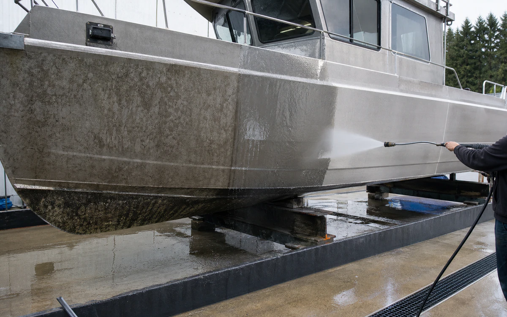
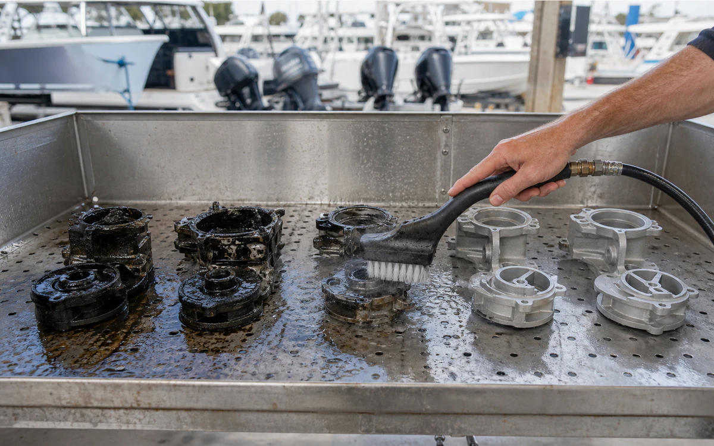

Industries › Marine, Marinas & Boatyards
Three actions for vessel wash, aluminum brightening, and mineral removal.
VertKleen Torque lifts marine film and supports finish care, AlumiBrite removes oxide, and HCR targets mineral scale and rust.
- CleanHull and topside surfaces, decks, bilges, engine bays, lifts, trailers, aluminum rails, docks, and service floors
- RemoveSalt, algae staining, oil and grease, diesel soot, fish residue, road film, and aluminum oxidation
- MethodFresh-water rinse, task-specific wash/degrease, controlled brightening where approved, recovery, and dry inspection
- Operating limitsConfirm coating and alloy, isolate shore power, protect bilges and water, and comply with yard permits and vessel-owner authorization.
- See job fit, process, and results
Cleaning chemistry for Marine, Marinas & Boatyards.
A focused yard kit improves crew experience while protecting asset appearance and contained-wash workflow.
See VertKleen results

Recommended
VertKleen products for Marine, Marinas & Boatyards.
Match the formula to the soil, surface, and cleaning process.
Applications and job fit
Clean vessel exteriors, service bays, bilges, and aluminum components inside a marina or boatyard wash-water plan.
- Task
- Clean vessel exteriors, service bays, bilges, and aluminum components inside a marina or boatyard wash-water plan.
- Asset / substrate
- Hull and topside surfaces, decks, bilges, engine bays, lifts, trailers, aluminum rails, docks, and service floors
- Soil / deposit
- Salt, algae staining, oil and grease, diesel soot, fish residue, road film, and aluminum oxidation
- Starting chemistry
- VertKleen Torque, VertKleen AlumiBrite, VertKleen CIP HCR
- Concentration
- Use the current wash or descaler label range; determine any aluminum-brightening ratio on a hidden alloy/finish coupon first.
- Process controls
- Document surface temperature, dilution, dwell, agitation, rinse volume, recovery, and dry finish condition.
- Shutdown / containment
- Confirm coating and alloy, isolate shore power, protect bilges and water, and comply with yard permits and vessel-owner authorization.
- Success check
- Dry no-film inspection, gloss/finish acceptance, white-wipe where practical, and zero visible sheen outside containment.
Product files
Open application records or request the SDS/TDS for your team.
Scope the job